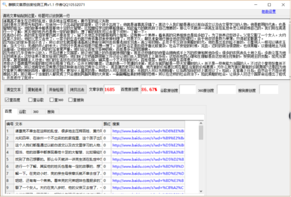

《三国演义》诸葛亮不幸降乱世，豪强地主压榨百姓，黄巾军起义失败
当时是东汉灵帝光和四年，在徐州一个不出名的的家庭里，这个孩子出现了，他就是诸葛亮没错了。亮这个人我们都是通过以前白话文以及古文里学习的人物，他是聪明的代表，也是智慧的担当，他的故事中都表现着他十足的大智慧，比如曾经学过的草船借箭，如此省力的就找到了自己想要的。那么今天就讲一讲亮生活在乱世中怎么样锻炼自己的。我们现在亮进行一个了解，其实他的姓氏也是有一定的故事的，想了解的朋友可以去查下资料，了解一下。
在亮幼小时，亮的亲生母亲章氏就不幸去世了，留下大他五岁的哥哥和两个姐姐，还有有一个弟弟。看来亮的兄弟姐妹也是挺多的了，为了扶养这些孩子，父亲又娶了一个女人。大约在亮八岁时，他的父亲又去世了，一家子的生活也就只有依靠叔来安排料理了，可是不久，朝廷准备强行接任他叔叔的职位。由于他叔叔是势力单薄，只得赶紧撤离了。
因为自己的家乡是回不去了，所以叔叔玄就带着诸高亮兄弟前往荆州去投靠老朋友刘表。亮少年时期，正处于东汉政治黑暗的时代，他也是出生的挺不幸的，不像别人一样可以锦衣玉食，当大少爷，无虑的开心的长大，这些对于亮来说怕是只能想一想了。当时社会正是阶级矛盾比较复杂，社会不安定的时候，况且，这时的政治很腐败，也很黑暗，以豪强地主为统治基础，这样的政权对人民的打压非常严重，他们会让百姓交各种的税，百姓是多么的困难啊。
因为他们几乎没有什么收入，然后还要上交国家，所以他们肩上的负担就特别的重。而且这些强权的府里会拥有成千上万的奴婢和其他杂役。很多的农民丧失土地之后，多数沦落为地主的地来活。这些徒弟不是发给他们用的，他们除了交纳高额地租之外还会让他们去人家的府上上做杂役，这些百姓的心理和生理都是由这些地主控制的，受到地主的支配，如充当家兵等，甚至跟随主人迁徙。他们的生活状态对比特别的尖锐，确实是一个不太好的时代，百姓很苦，有些人却很生活得意。
灵帝这个昏君竟然将官的职位用价格排了档次，公开大胆的售卖，这真的是一个荒唐的决策，或许当官的都是一些大发横财的人。并不是一些有能力治国的人。不过这个皇帝好像并不专于治国吧，所以他肯定也没有意识到这种做法对自己有什么坏处。 而且据历史可以知道, 地方官的价格要比现在朝廷当官的价格要贵。为什么地方官比朝官的价钱贵呢?这是因为地方官更方便的搜刮百姓，赚钱比较容易。
更加令人搞笑的是，有钱的人可以现钱买官，无钱的人可以先期赊着，以后再加倍的还上就可以了。如此，买官者上任后，自然会千方百计地搜刮人民，所以每一个当官的人都变成了只会搜刮民脂民膏的大贪官，一副副嘴脸真的特别的恐怖。所以在这样的社会政治下，如此黑暗的社会，让很多人对这个国家命运提出了担忧，并且进行了批评。
灵帝184年，黄巾起义终于像火山一样喷出了，这一年亮刚刚四岁，战争爆发的时候，一定是不安定的时候，所以亮生在这个时代，确实是苏葛亮的不幸福啊！这次的黄巾起义是一场有准备的农民起义。首领是张角，他利用在传道治病的掩护，联络大多数群众，进行了十多年的秘密准备工作，很快，起义队伍就发展到几十万人。起义受到群众的保护，与此同时，各地的地主，以全力对付起义军，装修筑一些装备，对抗起义军。黄巾军，这些人到哪个地方，就焚烧官府，捕杀这些官吏，夺回被地主霸占的土地，释放被囚禁的群众，开仓顺济饥民。在这支起义队伍中，也有不少劳动妇女参加，她们和男子一样，这些举动真的很得民心。
起义军在力量和整体实力方面都太弱小，再加上起义军分散各地，又少作战经验，终于被东汉统治者各个击破，大部分首领壮烈牺牲。起义虽然最后失败了， 很深影响了封建地主阶级，推动了社会向前发展，在起义的影响下，腐朽的东汉王朝已经不行了。
小编认为，曹操就生在这样一个乱世中，他有着不幸的家庭遭遇，他的生活充满了艰辛，他承受了人间的风风雨雨，不过这不仅磨练了他的意志，而且也提高了对挫折的容忍的能力，这对他的成长也是有好处的，这样的背景真的是成就了他，也给了他一个展示自己能力的时候，真的挺好的，不过这样的社会背景真的该变变了，不然百姓真的苦不堪言啊。